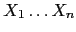

La directiva %tree hace que Parse::Eyapp genere una estructura de datos que representa al árbol sintáctico. Haciendo uso de las directivas adecuadas podemos controlar la forma del árbol.
Los nodos del árbol sintáctico generado por la producción
 son objetos (de tipo hash)
bendecidos en una clase
con nombre
son objetos (de tipo hash)
bendecidos en una clase
con nombre A_#, esto es, el de la variable sintáctica en el lado izquierdo
seguida de un número de orden.
Los nodos retornados por el analizador léxico son bendecidos
en la clase especial TERMINAL.
Los nodos tienen además un atributo children que referencia
a la lista de nodos hijos

del nodo.
La directiva %name CLASSNAME permite modificar el nombre
por defecto de la clase del nodo para que sea CLASSNAME.
Por ejemplo, cuando es aplicada en el siguiente
fragmento de código:
25 exp: .. ............ 32 | %name PLUS 33 exp '+' expHace que el nodo asociado con la regla pertenezca a la clase
PLUS en vez de a una clase con un nombre
poco significativo como
exp_25:
pl@nereida:~/LEyapp/examples$ cat -n CalcSyntaxTree.eyp
1 # CalcSyntaxTree.eyp
2 %right '='
3 %left '-' '+'
4 %left '*' '/'
5 %left NEG
6 %right '^'
7
8 %tree
9
10 %{
11 sub TERMINAL::info {
12 my $self = shift;
13
14 $self->attr;
15 }
16
17 %}
18 %%
19
20 line:
21 %name EXP
22 exp '\n'
23 ;
24
25 exp:
26 %name NUM
27 NUM
28 | %name VAR
29 VAR
30 | %name ASSIGN
31 VAR '=' exp
32 | %name PLUS
33 exp '+' exp
34 | %name MINUS
35 exp '-' exp
36 | %name TIMES
37 exp '*' exp
38 | %name DIV
39 exp '/' exp
40 | %name UMINUS
41 '-' exp %prec NEG
42 | %name EXP
43 exp '^' exp
44 | %name PAREN
45 '(' exp ')'
46 ;
47
48 %%
.. # Exactamente igual que en el ejemplo anterior
La forma que tiene el árbol construido mediante la directiva %tree
puede ser modificada. Por defecto, todos aquellos terminales
que aparecen en
definidos en el programa eyapp mediante el uso de apóstrofes
son eliminados del árbol. En la jerga ''Eyapp'' un
token sintáctico es uno que será eliminado (podado)
del árbol sintáctico. Por contra, un token semántico es uno que
aparecerá en el árbol. Por defecto los tokens definidos simbólicamente
como NUM o VAR son ''semanticos'' y aparecerán como un nodo de
tipo TERMINAL en el
árbol de análisis sintáctico. Estos estatus por defecto
pueden ser modificados mediante las directivas %semantic token
y %syntactic token.
Los token sintácticos no forman parte del árbol construido.
Asi pues, en el ejemplo que nos ocupa, los terminales '=',
'-',
'+',
'*' y
'/'
serán, por defecto, eliminados del árbol sintáctico.
pl@nereida:~/LEyapp/examples$ cat -n usecalcsyntaxtree.pl
1 #!/usr/bin/perl -w
2 # usecalcsyntaxtree.pl prueba2.exp
3 use strict;
4 use CalcSyntaxTree;
5
6 sub slurp_file {
7 my $fn = shift;
8 my $f;
9
10 local $/ = undef;
11 if (defined($fn)) {
12 open $f, $fn
13 }
14 else {
15 $f = \*STDIN;
16 }
17 my $input = <$f>;
18 return $input;
19 }
20
21 my $parser = CalcSyntaxTree->new();
22
23 my $input = slurp_file( shift() );
24 my $tree = $parser->Run($input);
25
26 $Parse::Eyapp::Node::INDENT = 2;
27 print $tree->str."\n";
El método str de Parse::Eyapp::Node
devuelve una cadena describiendo el árbol de análisis
sintáctico enraizado en el nodo
que se ha pasado como argumento.
El método str cuando visita un nodo comprueba la existencia de
un método info para la clase del nodo. Si es así el método
será llamado. Obsérvese como en la cabecera del programa
Eyapp proveemos un método
info para los nodos TERMINAL.
8 %tree
9
10 %{
11 sub TERMINAL::info {
12 my $self = shift;
13
14 $self->attr;
15 }
16
17 %}
18 %%
Los nodos TERMINAL del árbol sintáctico
tienen un atributo attr que guarda
el valor pasado para ese terminal por el analizador
léxico.
La variable de paquete $Parse::Eyapp::Node::INDENT controla el formato de presentación usado por Parse::Eyapp::Node::str : Si es 2 cada paréntesis cerrar que este a una distancia mayor de $Parse::Eyapp::Node::LINESEP líneas será comentado con el tipo del nodo.
pl@nereida:~/LEyapp/examples$ cat prueba2.exp
a=(2+b)*3
pl@nereida:~/LEyapp/examples$ usecalcsyntaxtree.pl prueba2.exp | cat -n
1
2 EXP(
3 ASSIGN(
4 TERMINAL[a],
5 TIMES(
6 PAREN(
7 PLUS(
8 NUM(
9 TERMINAL[2]
10 ),
11 VAR(
12 TERMINAL[b]
13 )
14 ) # PLUS
15 ) # PAREN,
16 NUM(
17 TERMINAL[3]
18 )
19 ) # TIMES
20 ) # ASSIGN
21 ) # EXP
Para entender mejor la representación interna que Parse::Eyapp hace del
árbol ejecutemos de nuevo el programa con la ayuda del depurador:
pl@nereida:~/LEyapp/examples$ perl -wd usecalcsyntaxtree.pl prueba2.exp
main::(usecalcsyntaxtree.pl:21): my $parser = CalcSyntaxTree->new();
DB<1> l 21-27 # Listamos las líneas de la 1 a la 27
21==> my $parser = CalcSyntaxTree->new();
22
23: my $input = slurp_file( shift() );
24: my $tree = $parser->Run($input);
25
26: $Parse::Eyapp::Node::INDENT = 2;
27: print $tree->str."\n";
DB<2> c 27 # Continuamos la ejecución hasta alcanzar la línea 27
main::(usecalcsyntaxtree.pl:27): print $tree->str."\n";
DB<3> x $tree
0 EXP=HASH(0x83dec7c) # El nodo raíz pertenece a la clase EXP
'children' => ARRAY(0x83df12c) # El atributo 'children' es una referencia a un array
0 ASSIGN=HASH(0x83decdc)
'children' => ARRAY(0x83df114)
0 TERMINAL=HASH(0x83dec40) # Nodo construido para un terminal
'attr' => 'a' # Atributo del terminal
'children' => ARRAY(0x83dee38) # Para un terminal debera ser una lista
empty array # vacía
'token' => 'VAR'
1 TIMES=HASH(0x83df084)
'children' => ARRAY(0x83df078)
0 PAREN=HASH(0x83ded9c)
'children' => ARRAY(0x83defac)
0 PLUS=HASH(0x83dee74)
'children' => ARRAY(0x83deef8)
0 NUM=HASH(0x83dedc0)
'children' => ARRAY(0x832df14)
0 TERMINAL=HASH(0x83dedfc)
'attr' => 2
'children' => ARRAY(0x83dedd8)
empty array
'token' => 'NUM'
1 VAR=HASH(0x83decd0)
'children' => ARRAY(0x83dee2c)
0 TERMINAL=HASH(0x83deec8)
'attr' => 'b'
'children' => ARRAY(0x83dee98)
empty array
'token' => 'VAR'
1 NUM=HASH(0x83dee44)
'children' => ARRAY(0x83df054)
0 TERMINAL=HASH(0x83df048)
'attr' => 3
'children' => ARRAY(0x83dece8)
empty array
'token' => 'NUM'
Observe que un nodo es un objeto implantado mediante un hash. El objeto es bendecido
en la clase/paquete que se especifico mediante la directiva %name. Todas estas clases
heredan de la clase Parse::Eyapp::Node y por tanto disponen de los métodos
proveídos por esta clase (en particular el método str usado en el ejemplo).
Los nodos disponen de un atributo children que es una referencia a la lista de
nodos hijo. Los nodos de la clase TERMINAL son construidos a partir
de la pareja (token, atributo) proveída por el analizador léxico. Estos nodos
disponen además del atributo attr que encapsula el atributo del terminal.
Observe como en el árbol anterior no existen nodos TERMINAL[+] ni TERMINAL[*]
ya que estos terminales fueron definidos mediante apóstrofes y son
- por defecto - terminales sintácticos.
pl@nereida:~/LEyapp/examples$ head -9 CalcSyntaxTree3.eyp | cat -n
1 # CalcSyntaxTree.eyp
2 %semantic token '=' '-' '+' '*' '/' '^'
3 %right '='
4 %left '-' '+'
5 %left '*' '/'
6 %left NEG
7 %right '^'
8
9 %tree
Escriba un programa cliente y explique el árbol que resulta
para la entrada a=(2+b)*3:
pl@nereida:~/LEyapp/examples$ cat prueba2.exp a=(2+b)*3 pl@nereida:~/LEyapp/examples$ usecalcsyntaxtree3.pl prueba2.exp | cat -n 1 2 EXP( 3 ASSIGN( 4 TERMINAL[a], 5 TERMINAL[=], 6 TIMES( 7 PAREN( 8 PLUS( 9 NUM( 10 TERMINAL[2] 11 ), 12 TERMINAL[+], 13 VAR( 14 TERMINAL[b] 15 ) 16 ) # PLUS 17 ) # PAREN, 18 TERMINAL[*], 19 NUM( 20 TERMINAL[3] 21 ) 22 ) # TIMES 23 ) # ASSIGN 24 ) # EXP
Modifiquemos la precedencia de operadores utilizada en el ejemplo anterior:
pl@nereida:~/LEyapp/examples$ head -6 CalcSyntaxTree2.eyp | cat -n
1 # CalcSyntaxTree.eyp
2 %right '='
3 %left '+'
4 %left '-' '*' '/'
5 %left NEG
6 %right '^'
Compilamos la gramática y la ejecutamos con entrada a=2-b*3:
pl@nereida:~/LEyapp/examples$ cat prueba3.exp
a=2-b*3
pl@nereida:~/LEyapp/examples$ usecalcsyntaxtree2.pl prueba3.exp
EXP(
ASSIGN(
TERMINAL[a],
TIMES(
MINUS(
NUM(
TERMINAL[2]
),
VAR(
TERMINAL[b]
)
) # MINUS,
NUM(
TERMINAL[3]
)
) # TIMES
) # ASSIGN
) # EXP
- asociativo a derechas
<, >, etc.).
¿Cual es la prioridad adecuada para estos operadores?
¿Que asociatividad es correcta para los mismos?
Observe los árboles formados para frases como
a = b < c * 2. Contraste como interpreta un lenguaje típico (Java, C, Perl)
una expresión como esta.
Es posible consultar o cambiar dinámicamente el estatus de un terminal usando el método YYIssemantic :
pl@nereida:~/LEyapp/examples$ sed -ne '/sub Run/,$p' CalcSyntaxTreeDynamicSemantic.eyp | cat -n
1 sub Run {
2 my($self)=shift;
3
4 $input = shift;
5 $self->YYIssemantic('+', 1);
6 return $self->YYParse( yylex => \&_Lexer, yyerror => \&_Error );
7 }
Los árboles generados al ejecutar el programa
contienen nodos TERMINAL[+]):
pl@nereida:~/LEyapp/examples$ usecalcsyntaxtreedynamicsemantic.pl
2+3+4
EXP(
PLUS(
PLUS(
NUM(
TERMINAL[2]
),
TERMINAL[+],
NUM(
TERMINAL[3]
)
) # PLUS,
TERMINAL[+],
NUM(
TERMINAL[4]
)
) # PLUS
) # EXP